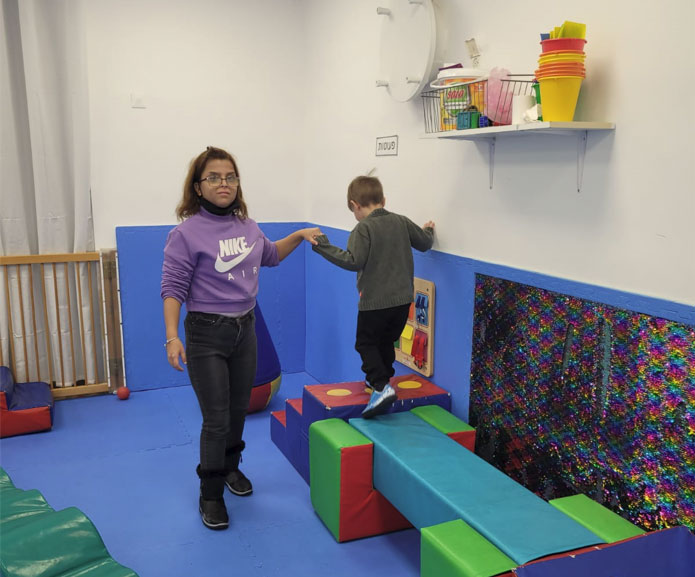
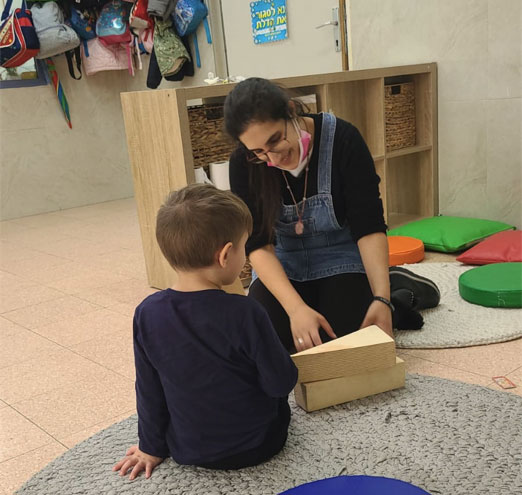

המטרה אליה אנו מכוונים: שילוב הדיירים בתעסוקה בשוק החופשי ויצירת רצף תעסוקתי ברמות שונות המותאמות להם
דיירי המערך מועסקים במגוון רחב של מקומות עבודה כגון: בתי ספר, גני ילדים, מעונות, סופר-פארם, סופרמרקט, מפעלים קטנים, חנויות, מפעל לתרופות, חברת החשמל ועוד.
כ-80% מהדיירים העובדים בשוק החופשי משתכרים שכר מינימום, והאחרים משתכרים שכר מותאם — כשבהדרגה עולה השכר שלהם לשעת עבודה. חלק קטן מהדיירים משתכר מעל לשכר מינימום.
איתור ושילוב הדיירים במקומות עבודה בשוק החופשי תוך התאמה לרצונותיהם ולכישוריהם.
ליווי תעסוקתי מקצועי על-ידי יועצת השמה, בהתאם לצורך.
שדרוג התפקידים השונים של הדיירים במקומות העבודה.
העלאת שכר העבודה לשעה לגבי הדיירים בעלי היכולות התעסוקתיות הגבוהות יחסית.

עבודה עם ילדים
רגעים מהעבודה